智能管家婆是配合智能报警器使用的app。oppo系统默认不允许第三方自启动及接收通知。如果希望本app能及时的收到报警器的报警信息，需要app能够具有自动启动，开机启动，常驻后台及在通知栏接收通知的权限。必须进行以下设置：
1.打开"设置"功能
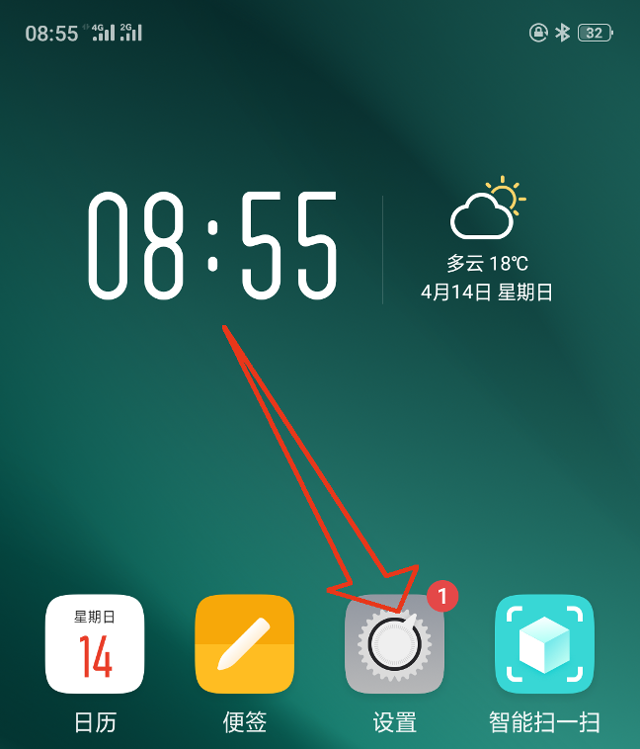
2.找到"应用管理"并点击
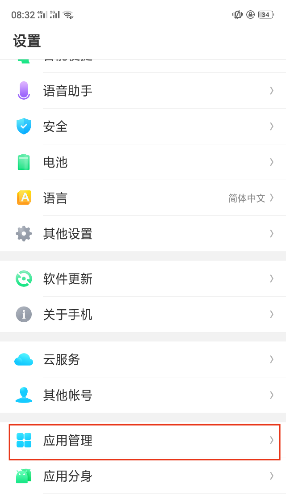
3.找到"智能管家婆"并点击
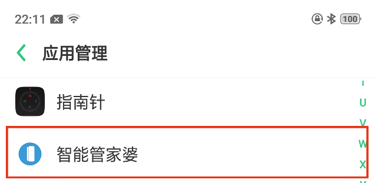
4.打开"允许自动启动"和"允许其他应用自动启动"开关,然后点击"通知管理"
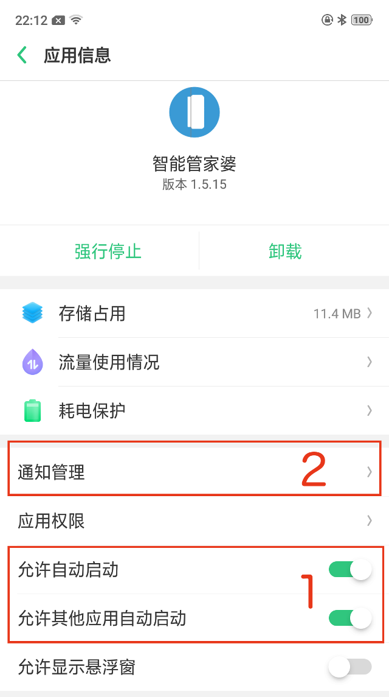
5.打开"允许通知"及之下所有开关。然后点击"Notification", 若下图中"Notification"不存在,则跳过图中第2步。完成以下所有步骤后,正常绑定报警器，然后触发一次报警，再次回到本页面点击"Notification"并打开相关开关
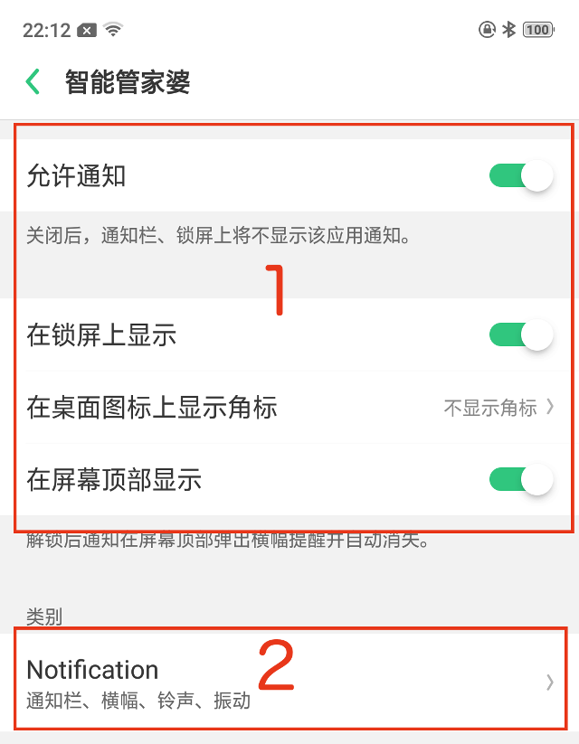
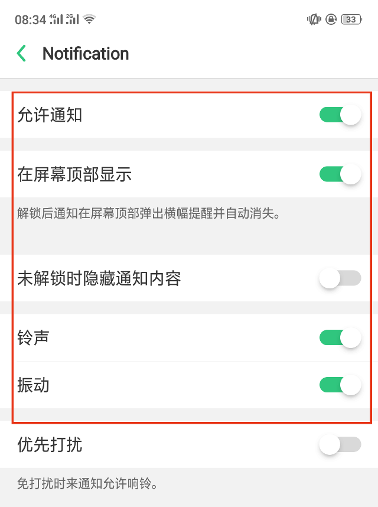
6.在"设置"页面找到"双卡与移动网络"并点击
7.找到"使用WLAN与移动网络的应用"并点击
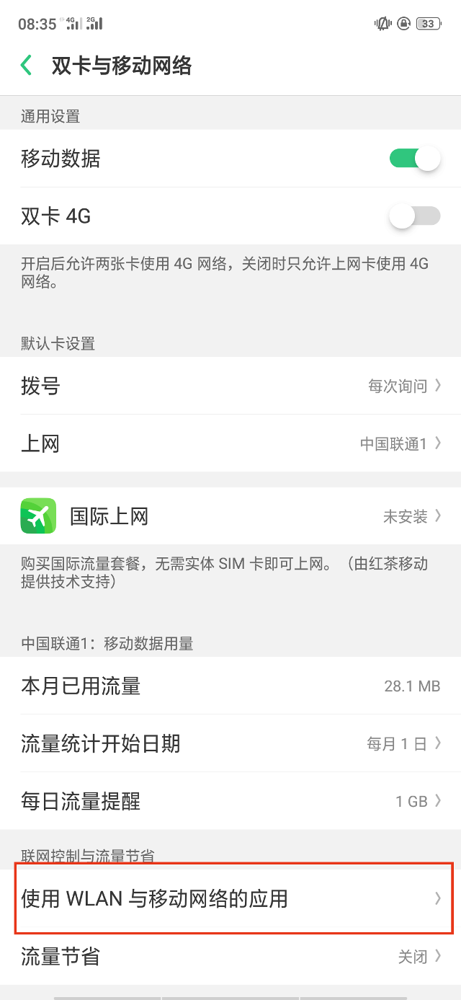
8.找到"智能管家婆"并点击
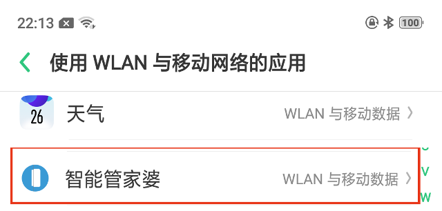
9.选择"WLAN与移动网络"
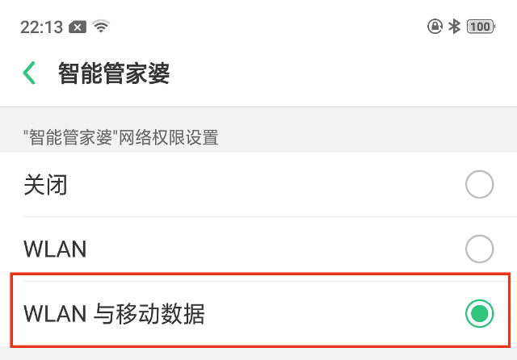
10.在"设置"页面找到"电池"并点击
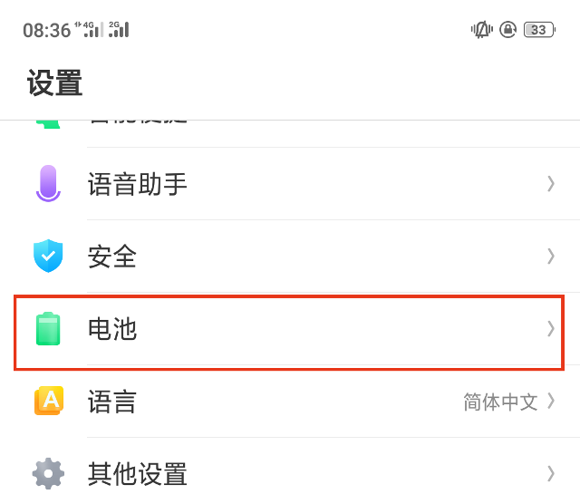
11.关闭"智能耗电保护"然后点击"自定义耗电保护"
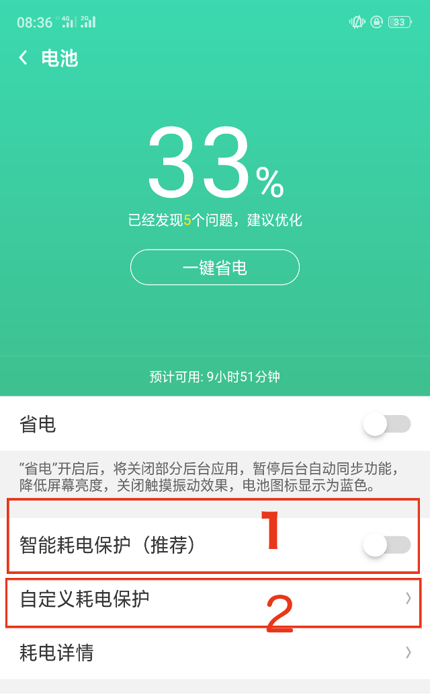
12.找到"智能管家婆"并点击
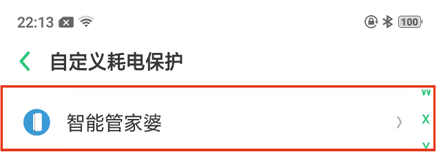
13.选择"允许后台运行"
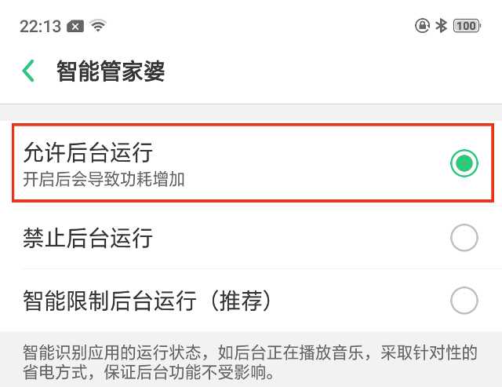
14.返回到“电池”页面找到"应用速冻"并点击
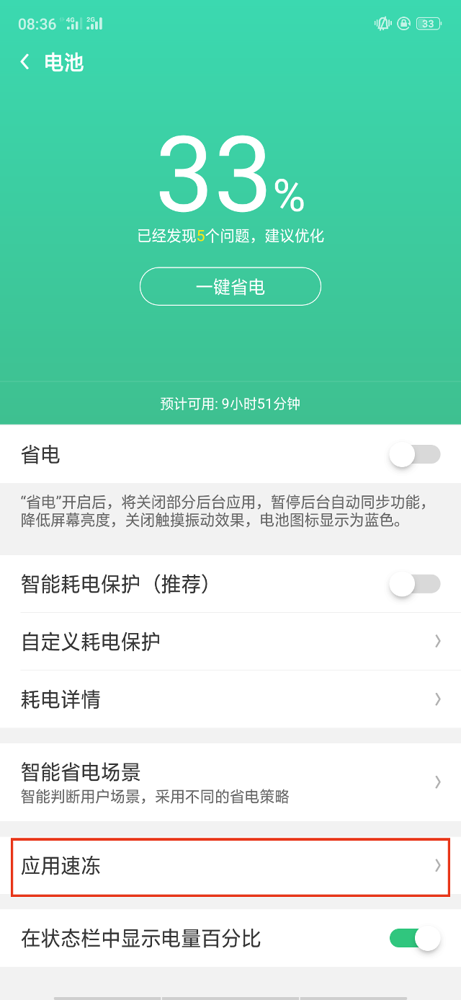
15.找到"智能管家婆"并关闭对其的速冻
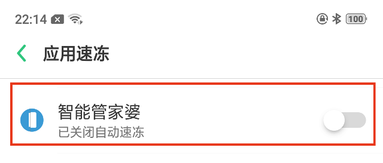
16.打开"智能管家婆"app, 然后从底中部上划进入进程管理界面
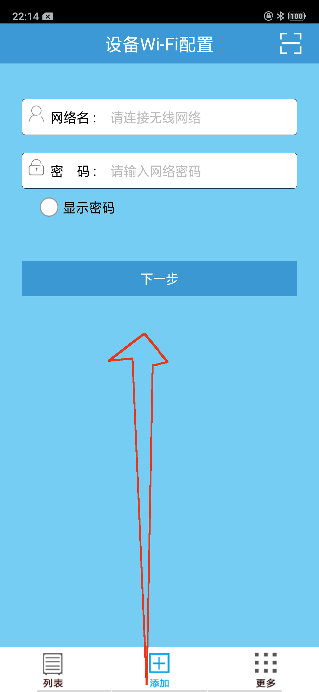
17.找到"智能管家婆",然后下拉选择"锁定"
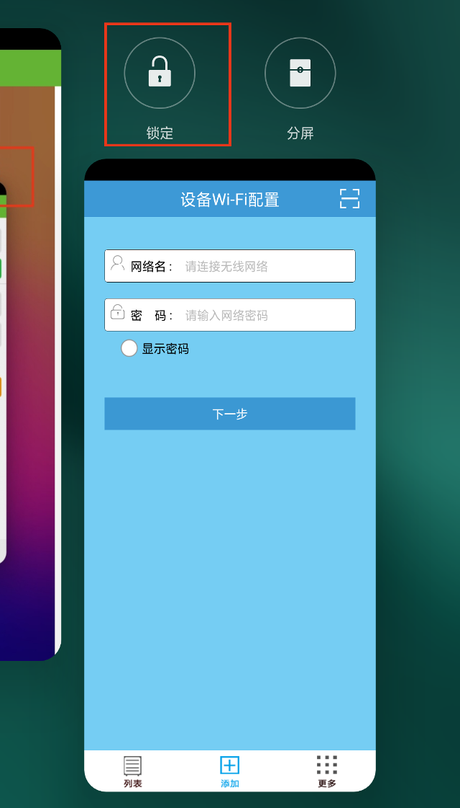